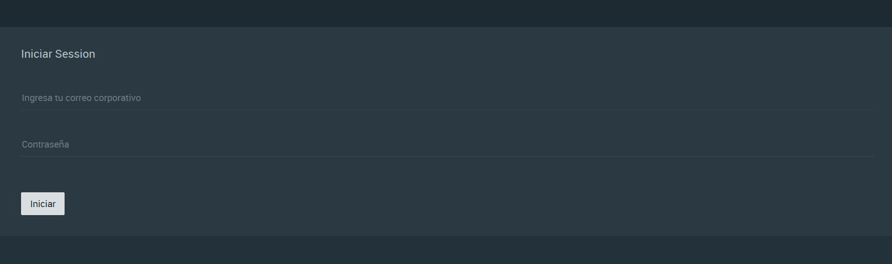
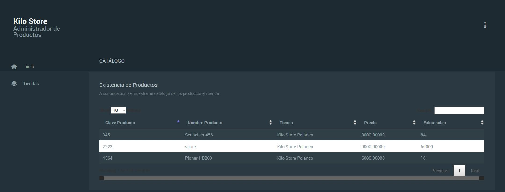
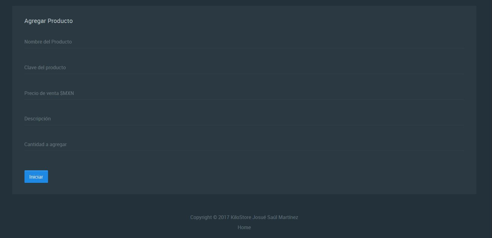
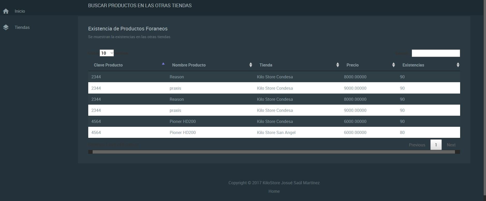

Presentación de Proyecto Test
EL KILO SOFTWARE PRESENTA
KiloStore
KiloStore es un gestor de catálogos robusto ya que posee características que lo hacen diferente a todos los gestores de catalogo.
Posee herramientas esenciales para la gestión.
Está realizado con PHP Y ZenFramework.
Las llamadas de datos se hacen mediante ajax,
Y se utiliza JSON para imprimir los valores en pantalla, evitando cargar el DOM HTML de nuevo en las peticiones.
Posee Gestor de Notificaciones y validaciones básicas que los proveen de lo necesario para gestionar sus productos.
Instalarlo es verdaderamente sencillo.
Solo debes de instalar WampServer para crear tu servidor virtual. O si posees ya un servidor solo es necesario agregar un host virtual para comenzar a disfrutar de KiloStore.
1.Instalar WampServer. www.wampserver.com/
2. crear un host virtual.
3. Copiar en tu directorio todos los archivos que vienen en este proyecto
BASE DE DATOS
1.Descarga e Archivo AetherDb.sql
2.Cargalo mdiante el uso de phpMyadmin o tu gestor favorito de Mysql.
3.listo A disfrutar de la experiencia de KiloSoftware
Nota: Es necesario configurar el archivo ModelBuilder ubicado dentro de la carpeta module\Application\src\Model
Ahí puedes introducir los datos de tu usuario y password de la base de datos.
Por defecto es root y sin password
Su uso es sencillo
Inicia sesión.

alava@al.com es un usuario de prueba, con contraseña password
 En la sección Home puedes ver el inventario de tu tienda local.
 Tambien puedes agregar nuevos productos
 En el apartado tiendas podras ver lso inventarios de todas tus tiendas